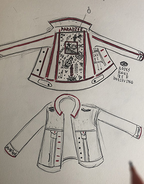
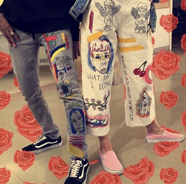

The life of Xander Nazon
An interview with myself.

Hello folks, My name is Xander Nazon and we have a special guest with us today. Coming all the way from the Land of Enchantment, Xander Nazon!
Hey Xander, great to be here today.
Pleasure to have you; so tell us a little about yourself Xander.
Well as you know, I'm Xander. I'm 18 years old, an only child, and I come from Albuquerque, New Mexico.
So what bring you all the way from New Mexico to New York then?
Well that's a funnt question actually. You see, I'm not exactly sure. I'm currently a first year at Lang for screen studies, but I'm not really sure if I want to continue to do that. I'm pretty passionate about doing actual art and being creative, so I might switch to Parsons for that. Who really knows though.
So it seems like you're really into painting and stuff?
Yeah, in all honestly you could call it my first passion. It's one of the first artistic mediums I used and I instant fell in love with it and that love has only grown over time. Nowadays, I've barely paint on canvas, alot of the time it's on clothes like pants or jackets. I really enjoy doing it and if I could I would love to turn it into a career. We will see how that goes go.
 Interesting. So let's get into the real interesting part of the interview. What's something about you that most people wouldn't assume just by looking at you.
Hmmm.... Let me think, I feel like there are alot of things about people that most people wouldn't know just by looking at me. When I was younger I used to play hockey and I really loved it. If you look at me know I'm pretty scrawwny, so I'm sure you can guess why I had to quit. I mean have you seen some of the guys who play that game, they're football players on ice. I'm also really into computer games. For the last few years me and my friends have really been into this game called CounterStrike. We're not the best, but we have a fun time when we played together.
What's your favrite color?
Purple, but I do really love me some orange.
If you could sing one song on American Idol, what would it be?
Well first off, if you knew how good I was at singing, you wouldn't even ask me to be on the show, but if I did have to do a song it would be Grand Theif Auto by Roy Blair. He's a really small artist, but I really like his music. It reminds me of that feeling of summer and falling in love; his songs are just really cute.
Ok, what is currently your favorite tv show currently?
I really got into the show Bojack Horseman over the summer, but Jane the Virgin is definitely my guilty pleasure show.
What about you favorite food?
Are you joking me? Do you know how hard that question is; I've tried so many dishes in my life. I used to love chicken paremean, but I could probably eat pizza or curry every day for the rest of my life and be perfectly happy. I also really love frnch fries, they're great as a side or just on there own.
What do you think inspires you the most?
I think I'm really motivated by people who have already made it. I see like my idols doing all these great thing and I feel just filled with creative energy. I want to try an be like them and that pushes me to want to do more.